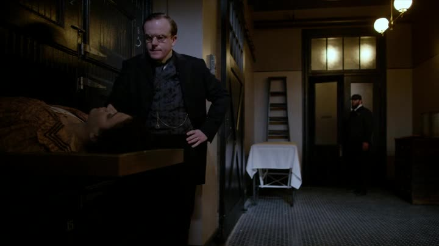

About Herman Barrow
Herman Barrow is the manager of the Knick. He's the "go-to" guy to keep the hospital running. He had a bad turn speculating in the market and now borows from one person to pay another.
Barrow caught stealing a corpse
Barrow's Characteristics
- He wants to escape his life
- He's resourceful and mousy
- He lives a double life
Barrow's allies
Though deceitful, he depends on allies to achieve his goals. Click on the links below to read more about them: